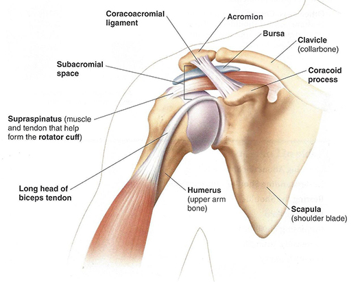

Nothing happened. Or rather it happened many years ago. A few months back I felt an unusual pain near the outer tip of the clavicle in certain position(s): arm is up, out, and externally rotated. Specifically, the snatch or overhead squat. The pain didn't go away after some self-therapy and heavy overhead lifting abstinence, so the next logical step is to cease lifting overhead for a longer period. Two months of no snatches and nothing heavy overhead. The pain disappeared completely, and I got a snatch PR out of that but returned after a week of overhead lifting. At this point, I sought an anatomical/medical explanation. An X-ray and an MRI showed two things:

The MRI did not show the extent of the damage, or even if there was any. The two tendons potentially affected are the supraspinatus tendon and the biceps tendon. At the very least the acromion's spur must be removed.
Strictly speaking, I can live with this anatomical defect if I don't ever care to do muscle-ups, butterfly pull-ups, or snatch over 100kg. Even professional athletes whose shoulders aren't at the center of their sport can lead perfectly normal careers without surgically addressing this issue.
The obvious question is: why isn't the other shoulder affected? Few reasons come to mind:
The surgery revealed that the bicep tendon was frayed and the supraspinatus tendon had a small piece torn off and hanging. Neither tendon was sufficiently compromised to limit normal function even under high load and intensity. However, since I'm already on the operating table, why not fix them up a little? The surgeon also noticed that there's not much space between the clavicle and the acromion, so he added some (see: Weightlifter's Shoulder). The exact four procedures performed are:
If you are not familiar with the US Healthcare System, these numbers won't make much sense. In such case, the amount of money I owe is $2K.
| Sticker Price : | $69K |
| Insurance Provider Negotatiated Price : | $19K |
| Insurance Paid : | $17K |
| Subscriber Owes : | $2K |
Combination of FSA and a new credit card with a $300 sign up bonus and 0.0% APR for a year help defray the final price.
The recovery period varies dramatically. Two people can undergo an identical surgical procedure: one will be up and running — literally — a month later and other will be on crutches for two months. Mundane, oft-overlooked factors such as general health, sleep, nutrition, exercise routines, common sense, and disposition play a major role in recovery from trauma. The statistical recovery period for populations which cannot be more different from a typical weightlifter or CrossFitter is 3-6 months.
Because nothing is torn per se, [overhead] exercise(s) can begin as soon as I'm able to raise my arm pain-free. The only repair was a small piece of the supraspinatus tendon, which prior to the surgery supported a 200-250lb barbell overhead on daily basis. Granted the repair temporarily weakens the tendons. The reason overhead position is not yet achievable is due to the mechanical trauma of the surgery: the holes and macro-tears in the muscles caused by the surgeon's tools and the resulting inflammation and swelling. Damage to the sensory nerves is causing pain as well. Imagine being stabbed in the shoulder a few times and then hit with a baseball bat, that's the extent of the damage. That is limiting the range of motion and power production. I can easily pick up and manipulate the debilitated arm with the healthy one sans any pain as long it stays below the shoulder. The position that can potentially undo some of my surgeon's handiwork is arm overhead, out, and externally rotated — the snatch — is the only one for which I require clearance from a surgeon or a physical therapist.
The muscles responsible for the retraction of the arm: trap[ezius], deltoid, both rhomboids, and lat[issimus dorsi] are untouched. As long as the arm is below the shoulder and pulling, its functionality is unaffected. I can do deadlifts, ring rows, [careful] sled pull, bicep curls, rowing machine. At low weight and intensity, these exercises bring much-needed blood and heat to the shoulder, speeding up its recovery. Protraction, pushing motion, even under ideal conditions, is severely limited. Leg exercises are largely unaffected.
Aside from the aforementioned exercises and my typical recovery protocol, which includes 1g of protein per pound of bodyweight, various supplements, and 7hr+ of sleep every day...
... no pain medicine and no icing. Pain exists to tell you that you're doing something wrong. In this case, it tells me not to move in ways which tear the healing muscles and tendons. If I'm hopped up on Vicodin and so much as walk in a way that continuously irritates the newly-forming soft tissues, I'll be slowing down recovery. If I feel the pain, I'll alter my gait to minimize it. This is why exercising on pain medication is doubly-dangerous in general: you won't know you're hurting yourself, and you'll tear through whatever soft tissues are still healing from the previous workout. Some of the pain is caused by the damaged sensory nerves, but since there's no way to selectively numb those, I just have to take it.
Icing/cooling directly slows recovery because cooling of any (bio)chemical reaction reduces its rate (see: Refrigerator). Generally speaking, icing is contraindicated for most mild to moderate injuries. Inflammation = your body sending repair materials to the affected area and disposing of the waste = good. The reason EMTs tightly wrap and ice injuries is because excessive swelling can constrict blood flow and kill a limb. EMT's goal is to get you to the hospital alive with all limbs attached, not to speed up your recovery. If someone breaks an arm: splint, wrap, ice it. Icing sore muscles, however, isn't the best practice and will almost certainly delay recovery.
Which brings us to the second kind of pain medicine: NSAIDs. Vicodin acts on your brain, Ibuprofen act on your body. The non-prescription class of pain management medicine knows as Nonsteroidal Anti-inflammatory Drugs (NSAID) do as their name suggests: reduce inflammation. Which, as established above, is the exact opposite of what's required for recovery. There is mounting evidence of sustained use of NSAIDs delaying bone and soft tissue healing. I took Ibuprofen for three days following the surgery before bed to help me fall asleep.
Orthopedic Physical Therapy, in short, is supervised, specialized, targeted exercise intended to improve physical function. After trauma, e.g. surgery, an individual spends time in recovery. During recovery — whether in a hospital bed, arm in a sling, or otherwise getting markedly less exercise than normal — the [sedentary] muscles atrophy, blood flow to the affected area(s) decreases, among other de-conditioning phenomena. Targeted exercise seeks to restore the function to the atrophied areas. So, when can I start PT? Well, in a way I already have, and in a way I may not need to.
Because weightlifters and CrossFitters have well-developed shoulders, even if half of the shoulder muscle wanes away — which it won't — it will have minimal impact on the arm movement and the ability to rebuild the muscle through accessory exercises. Shout-out Crossover Symmetry.
I engage in active and passive arm movement which doesn't cause pain. Active is when the arm moves on its own power, passive is when it is picked up with the other arm or the gravity does all of the work. As the pain recedes, the arm's range of motion gradually increases, thus all but eliminating the need for artificial mobilization by a physical therapist.
Soon, I will meet with a sports physical therapist. It is likely that because most of the debilitation is due to muscle damage, I will be cleared to lift overhead as soon as the pain subsides.
I do not have a medical degree and am by no means suggesting that you do as I do after your shoulder surgery. Do as your surgeon says! I am able to start immediate, gradual, self-therapy because an overwhelming amount of my post-operative debilitation stems from mechanical damage to the bone, muscle, and nerves, not repair of severed tendons or deteriorated labrum. Because I am able to distinguish many different kinds of pain, which is how this entire saga started, and I don't numb it. Because I'm able to isolate muscle groups and activate only healthy ones. Because I know the risks associated with every exercise and how to mitigate them. Don't be an idiot.